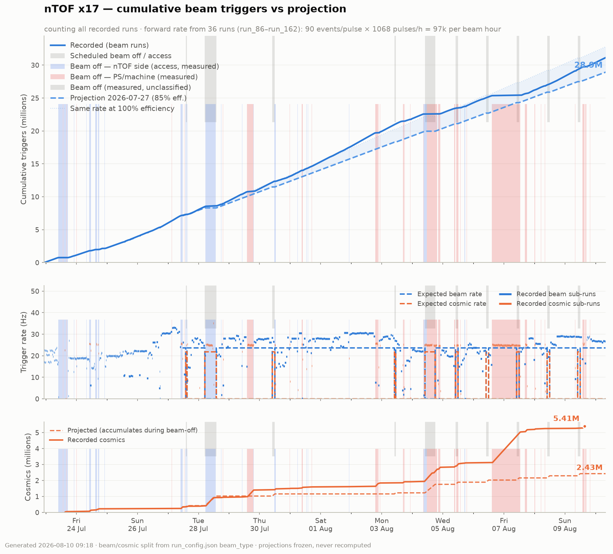
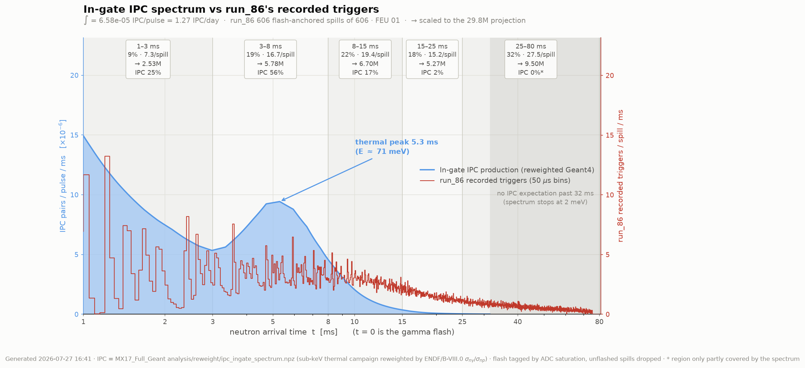

In-gate IPC production (reweighted Geant4, light blue) under the trigger yield measured in run_86 in 50 µs bins, flash-anchored (dark red) — the production point since the watermark moved to Hwm 1 / Lwm 0. Each band shows its share of the recorded triggers, that share scaled to the projection above, and its share of the expected IPC — which is where the two disagree: 56% of the IPC lands in 3–8 ms, where 19% of the triggers are.

Every sub-run of the last week on a wall-clock axis: each column is one sub-run, its width the time it actually ran and its height the events it banked. Shaded bands are measured beam-off periods, coloured by cause — red when the PS complex delivered beam to nobody (machine fault), blue when only nTOF was stopped (access / removed from the supercycle) — where one is wide, the orange columns under it are the automatic changeover to cosmics. Hover a column for its run.
Every run in the ledger. Click a column to sort.